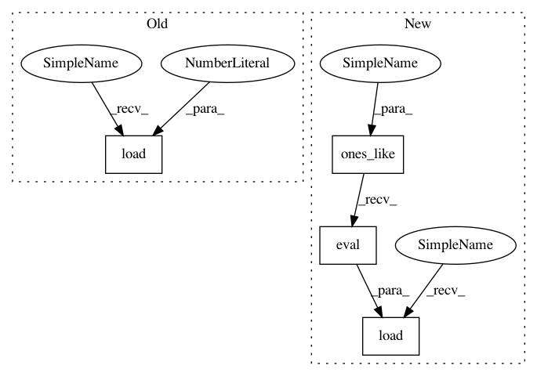

490f5b7364da85d414f4b8e93b3699e4d1b516f5,tests/garage/tf/baselines/test_continuous_mlp_baseline.py,TestContinuousMLPBaseline,test_is_pickleable,#TestContinuousMLPBaseline#,74
Before Change
with tf.compat.v1.variable_scope("ContinuousMLPBaseline", reuse=True):
return_var = tf.compat.v1.get_variable("SimpleMLPModel/return_var")
return_var.load(1.0)
prediction = cmb.predict(obs)
h = pickle.dumps(cmb)
After Change
with tf.compat.v1.variable_scope("ContinuousMLPBaseline", reuse=True):
bias = tf.compat.v1.get_variable("mlp/hidden_0/bias")
bias.load(tf.ones_like(bias).eval())
_, _, paths, _ = get_train_test_data()
result1 = cmb.predict(paths)
h = pickle.dumps(cmb)
In pattern: SUPERPATTERN
Frequency: 3
Non-data size: 4
Instances
Project Name: rlworkgroup/garage
Commit Name: 490f5b7364da85d414f4b8e93b3699e4d1b516f5
Time: 2020-07-02
Author: 31981600+yeukfu@users.noreply.github.com
File Name: tests/garage/tf/baselines/test_continuous_mlp_baseline.py
Class Name: TestContinuousMLPBaseline
Method Name: test_is_pickleable
Project Name: rlworkgroup/garage
Commit Name: 8295d05ccbe3d5aaa07440f2409cb8fa69ec88fc
Time: 2020-07-07
Author: 31981600+yeukfu@users.noreply.github.com
File Name: tests/garage/tf/baselines/test_gaussian_mlp_baseline.py
Class Name: TestGaussianMLPBaseline
Method Name: test_is_pickleable
Project Name: rlworkgroup/garage
Commit Name: ba37ff3652f24e8416cf4eb13e9dd66976f843e8
Time: 2020-06-30
Author: ahtsans@gmail.com
File Name: tests/garage/tf/baselines/test_gaussian_cnn_baseline.py
Class Name: TestGaussianCNNBaseline
Method Name: test_is_pickleable
Project Name: rlworkgroup/garage
Commit Name: 490f5b7364da85d414f4b8e93b3699e4d1b516f5
Time: 2020-07-02
Author: 31981600+yeukfu@users.noreply.github.com
File Name: tests/garage/tf/baselines/test_continuous_mlp_baseline.py
Class Name: TestContinuousMLPBaseline
Method Name: test_is_pickleable